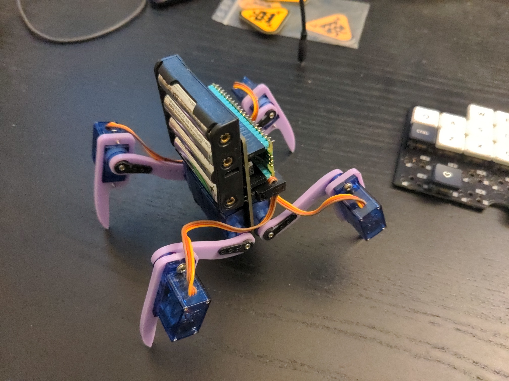

Can We Make It Simpler?¶
Published on 2022-11-18 in Fluffbug.
I’m pretty much happy with the physical design of this robot by now, but I also like to tinker, so I asked myself if it could be simplified any further? I noticed that 90% of the components on the PCB are dedicated to keeping the LiPO battery happy – the protection circuit and the charging circuit. What if we could use some other type of battery that doesn’t require as much babysitting? Alkaline batteries are out, since one that could provide enough current for the servos would be way too heavy, but what about NiMH batteries? They can deliver higher currents than the alkalines, right?
Since I was ordering some PCBs anyways, I quickly made a modified version of the fluffbug PCB that comes with a 3xAAA battery holder on the back, and without all the protection and charging circuits – external chargers for NiMH batteries are common enough. I also took that opportunity to replace the S2 Mini footprint with a Raspberry Pi Pico footprint – just to see how that would work, especially since there is a version with WiFi now. I also ordered the batteries, and when everything came, I started testing.
It quickly became obvious, that three AAA NiMH batteries are enough to drive a single 9g servo, but not 8 such servos all at once. Even with a beefy capacitor to smooth the spikes in current, there simply was not enough power. So I replaced the battery holder with a 4xAAA one, and tried again. This works, but the robot is now considerably heavier than before, and can’t move as fast. I consider the experiment to be failed, we are better off with the LiPO and all the extra components.
As a side experiment, since the pi pico doesn’t have the limit to only 8 PWM outputs, as the esp32-s2 does, I also got to test the speaker with the fet on an actual WAV file with audiopwmio. I don’t know if it’s the low-pass filter that I added, or the transistor itself, but the results are disappointing – the audio is barely audible. If I keep the speaker in the future, I will probably use a proper amplifier with it.
I am still tempted to make a version of the PCB with the LiPO and the pi pico, but to be honest I’m not sure it would actually bring anything new right now. I might do it to try the SMD versions of the headers and the IDC sockets that I found, and that speaker amplifier, but really I should be focusing on programming, so that the robot actually does something more than just walking forward.